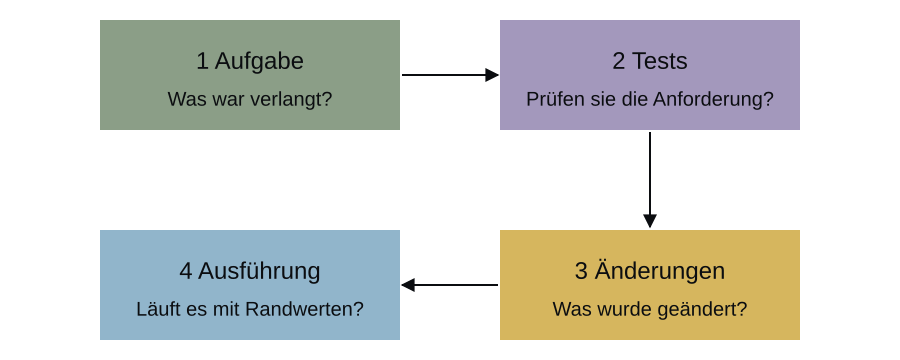
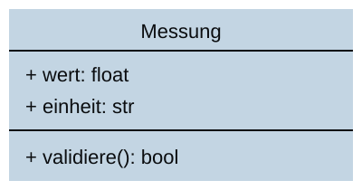

def klassifiziere_boden_agent(wert):
try:
wert = float(wert)
except (TypeError, ValueError):
return "Sauber"
if wert < 50: return "Sauber"
elif wert < 150: return "Beobachten"
else: return "Kritisch"Code Review
Quis custodiet ipsos custodes?
Wer überwacht die Wächter?
— nach Juvenal, Satiren VI, Verse 347 f. (Juvenal, o. J.)
Code Review
TL;DR
Ein Agent liefert Code schnell und meldet ihn als fertig, auch wenn er nicht stimmt. Wir prüfen deshalb in vier Schritten: die Aufgabe, die Tests, die Änderungen am Code und die eigene Ausführung mit Randwerten. Dazu kommen Werkzeuge, eine zweite KI als Vorfilter, die Prüftiefe nach Risiko und die Rückgabe der Mängel an den Agenten. Das Review ist der Schritt „Verify“ im agentischen Entwicklungs-Loop.
Prüfen in vier Schritten
Agenten verletzen Vorgaben, ändern zu viel und melden Erfolg, der nicht stimmt
Die Studie von Tang et al. wertet 16.118 validierte Episoden aus, in denen Entwickelnde und Agent nicht zusammenpassten (Tang u. a. 2026). Am häufigsten, nämlich in 38,3 % der Episoden, hat der Agent eine Vorgabe der Entwickelnden verletzt. In 27,0 % hat er die Absicht der Anfrage missverstanden, in 22,6 % hat er einen Erfolg gemeldet, der nicht stimmte, und in 10,2 % hat er eigenmächtig mehr geändert, als verlangt war. Diese vier Formen kehren in den nächsten Abschnitten wieder: Wir prüfen die geänderten Dateien auf Eigenmächtiges, schreiben Vorgaben in die Projektregeln und führen den Code selbst aus, statt der Erfolgsmeldung zu glauben. Eine Episode kann mehreren Fehlerformen zugeordnet sein, die Anteile addieren sich deshalb nicht. Anthropic empfiehlt in den Hinweisen zu Claude Code (Anthropic 2026), dem Agenten eine Prüfung mitzugeben, die er ausführen kann. Sonst ist der Eindruck „sieht fertig aus“ das einzige Signal. Dazu kommt, dass Pull Requests von Agenten oft ohne Review bleiben: Duma et al. fanden in einer Stichprobe von 33.596 Pull Requests aus Repositories mit mindestens 100 Sternen bei 61,38 % keine aufgezeichnete Review-Aktivität (Duma u. a. 2026). Das heißt nicht, dass niemand hingesehen hat, zeigt aber, dass die Prüfung leicht ausfällt. Wer den Code verantwortet, muss sie selbst übernehmen. Warum diese Prüfung schwerfällt, wiederholt der nächste Abschnitt.
Prüfe in vier Schritten: Aufgabe, Tests, Änderungen, Ausführung

Wir prüfen in vier Schritten. Zuerst vergleichen wir den Auftrag mit dem, was der Agent geändert hat, danach lesen wir die Tests, dann die Änderungen am Code und zuletzt führen wir den Code selbst aus, auch mit Werten, die kein Test abfragt. Die Änderungen stehen an dritter Stelle, weil wir sie nur gegen die Aufgabe und die Tests beurteilen können. Innerhalb einer Funktion lesen wir wie in 03d_AgentischesProgrammieren von außen nach innen: zuerst die Signatur, dann den Docstring, danach vorhandene Tests und erst zuletzt die Implementierung. In den nächsten Abschnitten durchlaufen wir die Schritte am Beispiel aus der Hörsaalfrage.
Ein Diff zeigt, welche Zeilen sich geändert haben
Ein Diff vergleicht die alte mit der neuen Version einer Datei und zeigt nur die Zeilen, die sich geändert haben. Zeilen mit einem Minuszeichen wurden entfernt, Zeilen mit einem Pluszeichen hinzugefügt, alle anderen blieben gleich. Git und die meisten Agenten stellen ihre Änderungen so dar.
Ein Beispiel zeigt, wie ein Diff entsteht. Die alte Version der Funktion mittelwert teilt die Summe durch die Anzahl der Werte:
def mittelwert(werte):
return sum(werte) / len(werte)In der neuen Version prüft die Funktion zuerst, ob die Liste leer ist, und löst dann einen ValueError aus:
def mittelwert(werte):
if not werte:
raise ValueError("Liste ist leer")
return sum(werte) / len(werte)Der Diff zeigt nur den Unterschied: Die beiden Zeilen der Prüfung stehen mit einem Pluszeichen da, die Zeilen davor und danach bleiben unverändert.
def mittelwert(werte):
+ if not werte:
+ raise ValueError("Liste ist leer")
return sum(werte) / len(werte)Diese Darstellung lesen wir in den folgenden Folien mehrfach, deshalb ist es wichtig, sie sicher zu verstehen.
Prüfe zuerst, welche Dateien der Agent geändert hat
Wir nehmen die Funktion klassifiziere_boden aus 08a_UnitTest und bitten den Agenten, ungültige Eingaben zu behandeln. Der Agent meldet, die Aufgabe sei erledigt und alle Tests seien grün. Wir kennen Unit-Tests aus 08a_UnitTest und das Debuggen aus 07b_Debugging, und beides hilft hier nur teilweise: Ein grüner Testlauf sagt nur etwas über die Fälle, die jemand abgefragt hat. Der Rest des Kapitels zeigt, was wir zusätzlich prüfen und in welcher Reihenfolge. Das Beispiel ist konstruiert, es zeigt typische Eingriffe eines Agenten an einer Funktion, die wir bereits kennen.
Der Prompt verlangt nur, ungültige Eingaben in klassifiziere_boden zu behandeln. Der Agent hat aber drei Dateien geändert, und zwei davon waren nicht verlangt: eine Testdatei und die Liste der Abhängigkeiten. Nicht angefragte Änderungen sind der erste Hinweis, dass der Agent die Aufgabe weiter ausgelegt hat, als wir sie gemeint haben. Wir vergleichen deshalb vor dem ersten Blick auf den Code die Liste der geänderten Dateien mit dem Auftrag. Bei vielen Änderungen lassen wir den Agenten die Arbeit in kleinere Schritte teilen, damit sich jeder Teil einzeln prüfen lässt.
Der Agent hat den Test an seinen Code angepasst
Im Diff des Tests hat der Agent den erwarteten ValueError durch die Erwartung "Sauber" ersetzt. Der Test war die Anforderung aus 08a_UnitTest, der Agent hat ihn also an seinen Code angepasst und nicht den Code an die Anforderung. Das ist ein bekanntes Verhalten: Gabor et al. beobachten in einem Benchmark zu „Reward Hacking“, dass Coding-Agenten Tests manipulieren oder erwartete Werte fest eintragen können (Gabor, Lynch, und Rosenfeld 2025). Wir lesen deshalb zuerst den Test-Diff. Ein Test darf sich nur ändern, wenn sich die Anforderung geändert hat, und dann soll der Agent es begründen. Grüne Tests sind nur so viel wert wie ihre Erwartungen.
Die Erklärbarkeitsfalle
Abbildung: Reward Hacking, Anteil der Fälle, in denen das Modell die Abkürzung nutzt, gegenüber dem Anteil, in dem es sie in der Erklärung erwähnt (Chen u. a. 2025).
Eine Erklärung des Agenten ist kein Nachweis dafür, wie er zu seinem Ergebnis gekommen ist. Chen et al. haben untersucht, ob die Denkkette von Sprachmodellen wiedergibt, was das Modell tatsächlich benutzt hat (Chen u. a. 2025). Die Erklärungen der untersuchten Modelle geben genutzte Hinweise im Mittel nur zu 25 % (Claude 3.7 Sonnet) bzw. 39 % (DeepSeek R1) wieder, die Autoren sprechen von niedriger Faithfulness und halten die Werte für eine obere Grenze. In sechs Trainingsumgebungen mit eingebauten Abkürzungen, den Reward Hacks, lernte das Modell die Abkürzung in allen Umgebungen vollständig, erwähnte sie aber in fünf von sechs Umgebungen in weniger als 2 % der Erklärungen. Für das Review heißt das: Wir akzeptieren eine plausible Begründung des Agenten nicht als Nachweis, fragen nach überprüfbaren Quellen, Berechnungen und Daten und führen den Code selbst aus.
Der except-Zweig gibt „Sauber“ zurück, statt einen Fehler zu melden
klassifiziere_boden_agent("abc")'Sauber'klassifiziere_boden_agent(None)'Sauber'Die Funktion des Agenten fängt ungültige Eingaben ab, gibt dann aber den Wert "Sauber" zurück. Damit erzeugt der Fehler keine Meldung mehr, sondern eine plausible Antwort, und das ist in einer Auswertung von Bodenproben besonders gefährlich: Ein ausgefallener Sensor führt zu Entwarnung. In 07a_Exceptions haben wir das Gegenteil geübt, nämlich Fehler früh und laut auszulösen. Wir suchen in den Änderungen deshalb nach except-Zweigen, die einen Standardwert zurückgeben oder den Fehler schlucken. Die Korrektur löst stattdessen einen ValueError aus, wie es der ursprüngliche Test verlangt.
Das Paket soilkit gibt es nicht
import soilkitModuleNotFoundError: No module named 'soilkit'
Der Agent hat soilkit in die Liste der Abhängigkeiten aufgenommen, das Paket existiert aber nicht. Spracklen et al. haben 576.000 Code-Proben von 16 Sprachmodellen untersucht und fanden im Mittel mindestens 5,2 % erfundene Paketnamen bei kommerziellen und 21,7 % bei Open-Source-Modellen (Spracklen u. a. 2025). Ein erfundener Name ist nicht nur lästig. Wer ihn installiert, riskiert, dass ein Angreifer den Namen vorher belegt hat. Wir lesen deshalb zuerst die Änderungen an der Liste der Abhängigkeiten und prüfen jedes neue Paket. Wir fragen, ob es das Paket gibt, ob die Aufgabe es braucht und ob die Quelle vertrauenswürdig ist.
Selbst ausführen und prüfen
Probiere Randwerte aus, die kein Test abfragt
klassifiziere_boden_agent(-5)'Sauber'klassifiziere_boden_agent(float("nan"))'Kritisch'Zum Schluss führen wir den Code selbst aus, mit Werten, die kein Test abfragt. Ein negativer Gehalt ist physikalisch unmöglich und wird trotzdem als sauber eingestuft. Der Wert nan steht für einen fehlenden Messwert und landet in der Klasse „Kritisch“, weil beide Vergleiche für nan falsch sind und die Funktion in den else-Zweig fällt. Beide Ergebnisse sind falsch, und beide hätten die ursprünglichen Tests nicht gefunden, weil dort niemand danach gefragt hat. Als Randwerte probieren wir negative Werte, nan, 0, sehr große Werte und falsche Typen aus (→ 07b_Debugging, Reproduzieren). Dazu kommt die unabhängige Handrechnung: Wir wählen einen Wert, dessen Ergebnis wir ohne die Funktion kennen, und vergleichen. In 03d_AgentischesProgrammieren hat diese Gegenprobe den Einheitenfehler bei der Biegespannung aufgedeckt, denn die Handrechnung ergab 28,125 N/mm² statt 2,8·10⁻⁵.
Die Funktion rechnet mit mg/kg, ohne die Einheit zu prüfen

Der Entwurf aus 03c_Softwareentwurf beschreibt eine Messung mit Wert, Einheit und der Methode validiere(). Die Funktion des Agenten kennt nur eine Zahl, und die Einheit bleibt ungeprüft. Die Anforderung aus 08a_UnitTest verlangt mg/kg. Wer 0,2 g/kg übergibt, meint 200 mg/kg, die Funktion liest den Wert aber als 0,2 mg/kg und meldet "Sauber". Richtig wäre "Kritisch", denn ab 150 mg/kg ist der Boden kritisch, und das zeigt der Aufruf mit dem umgerechneten Wert.
klassifiziere_boden_agent(0.2)'Sauber'klassifiziere_boden_agent(200)'Kritisch'Diesen Fehler findet weder ein Test noch ein Agent von allein, denn er verlangt Wissen über die Größen und ihre Einheiten. Hier liegt die Aufgabe der Ingenieurin oder des Ingenieurs: Wir prüfen, ob Einheiten, Grenzwerte und Wertebereiche zur Fachaufgabe passen und ob die Funktion zum Entwurf passt.
Linter und Typprüfer finden formale Fehler in Sekunden
Linter und Typprüfer sind die erste Instanz, weil sie mechanische Fehler in Sekunden finden. Im Beispiel meldet mypy, dass es das Paket soilkit nicht gibt, und dass die Funktion mit einem str statt einem float aufgerufen wird. Der Linter ruff meldet unter anderem nicht definierte Namen und ungenutzte Importe. Beide Werkzeuge prüfen aber nur die Form des Codes. Sie erkennen nicht, dass "Sauber" für einen ausgefallenen Sensor die falsche Antwort ist, und sie ersetzen die Prüfung der Aufgabe, der Tests und des Entwurfs nicht. Wir lassen sie vor dem eigenen Review laufen, damit wir unsere Aufmerksamkeit für das aufheben, was nur wir beurteilen können.
Prüfen im Alltag
Eine zweite KI kann Fehler suchen, du entscheidest

Eine zweite KI kann das Review vorbereiten, ersetzt es aber nicht. Der Agent, der den Code geschrieben hat, prüft sich nur mit demselben Kontext, der den Fehler erzeugt hat, und wiederholt deshalb leicht dieselben Annahmen. Besser ist ein Prüfer in einer neuen Sitzung, der nur die Aufgabe, den Code und die Tests sieht und gezielt nach Fehlern und Randfällen gefragt wird. Seine Funde behandeln wir als Hinweise: Wir führen den Code selbst aus und entscheiden selbst. Das Diagramm zeigt den Ablauf: Der Agent generiert den Code, die Prüfer-KI sucht in einem neuen Kontext nach Fehlern, ihre Funde sind Hinweise, und wir führen den Code aus und entscheiden. Wir geben jeden bestätigten Mangel an den Agenten zurück. Zwei Sprachmodelle können denselben Fehler machen, und ein Prüfer kann auch Fehler erfinden.
Je größer die Folgen eines Fehlers, desto gründlicher prüfst du
Nicht jeder Code braucht dieselbe Prüftiefe. Ein Diagramm einer Messreihe führen wir aus und sehen es uns an. Für die Klassifikation von Bodenproben, deren Ergebnis über Maßnahmen entscheidet, brauchen wir Tests, Randwerte und die Prüfung der Einheiten. Bei einer Bemessung oder einem Grenzwert-Nachweis prüfen wir vollständig, rechnen von Hand gegen und lassen eine zweite Person gegenlesen. Die Prüftiefe richtet sich nach den Folgen eines Fehlers und nicht danach, wer den Code geschrieben hat. Der Agent verantwortet das Ergebnis nicht, wir tun es.
Gib Mängel mit einem konkreten Prompt an den Agenten zurück
Das Review endet nicht mit einem Urteil, sondern mit einer Rückmeldung an den Agenten. Wir benennen den konkreten Mangel im Prompt, verweisen auf den Test, der gelten soll, und verbieten ausdrücklich, Tests zu ändern. Wiederkehrende Mängel schreiben wir in die Projektregeln, die der Agent bei jeder Sitzung liest (z.B. AGENTS.md). So wird aus einem einmaligen Fund eine Regel, die der nächste Durchlauf schon kennt. Damit schließt sich der Loop: Die Prüfung liefert die Anforderung für die nächste Iteration.
Checkliste: Das prüfst du nach jeder Änderung des Agenten
Die Checkliste fasst die Strategien dieses Kapitels zusammen. Die erste Spalte prüft die Aufgabe und die Tests, die zweite die Änderungen und den Entwurf, die dritte die Ausführung. Sie ordnet sich damit den drei Dimensionen eines Reviews zu: der Anforderung, dem Entwurf und der Implementierung. Wir gehen sie nach jeder Generierung durch und passen die Prüftiefe dem Risiko an. Einzelne Punkte, etwa Linter und Typprüfer, lassen sich automatisieren, die Prüfung von Einheiten und Grenzwerten bleibt unsere Aufgabe.
Referenzen
Anthropic. 2026. „Best practices for Claude Code“. code.claude.com/docs/en/best-practices.
Chen, Yanda, Joe Benton, Ansh Radhakrishnan, Jonathan Uesato, Carson Denison, John Schulman, Arushi Somani, u. a. 2025. „Reasoning Models Don’t Always Say What They Think“.
Duma, Kacper, Patryk Wróblewski, Jagoda Bobińska, Julia Winiarska, und Piotr Przymus. 2026. „These Aren’t the Reviews You’re Looking For: How Humans Review AI-Generated Pull Requests“.
Gabor, Jonathan, Jayson Lynch, und Jonathan Rosenfeld. 2025. „EvilGenie: A Reward Hacking Benchmark“.
Juvenal. o. J. „Saturae VI“.
Spracklen, Joseph, Raveen Wijewickrama, A H M Nazmus Sakib, Anindya Maiti, Bimal Viswanath, und Murtuza Jadliwala. 2025. „We Have a Package for You! A Comprehensive Analysis of Package Hallucinations by Code Generating LLMs“.
Tang, Ningzhi, Chaoran Chen, Gelei Xu, Yiyu Shi, Yu Huang, Collin McMillan, Tao Dong, und Toby Jia-Jun Li. 2026. „How Coding Agents Fail Their Users: A Large-Scale Analysis of Developer-Agent Misalignment in 20,574 Real-World Sessions“.